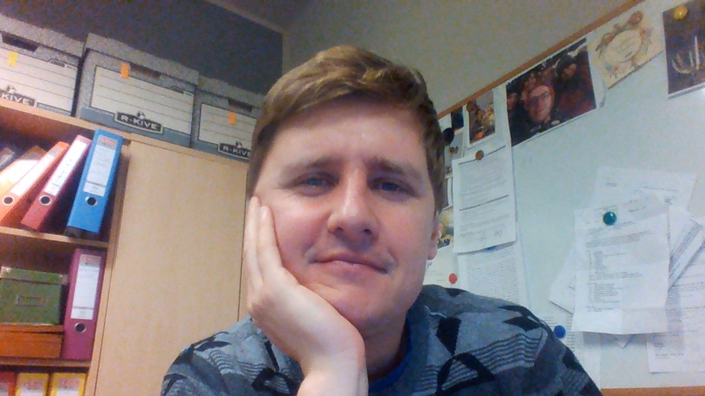

WTF COTENFRONTEND 01.09.2020 - ??
STRONA GŁÓWNA
O MNIE
Nazywam się Michał, mam 36 lat. Od dłuższego czasu siedziała we mnie potrzeba i duża ochota na ZMIANY w moim życiu zawodowym. Przez wiele lat (prawie dziesiąt...) pracowałem izajmowałem się rzeczami, które w sporej częsci przestały sprawiać mi satykację i mnie rozwijać wwiększości aspektów. Postanowiłem że stanę się wolny i nauczę się czegoś konkretnego. Z racji tego, że jestem osobą kreatywną, twórczą ale i systematyczną postanowiłem się uczyć frontendu...
JAK CHCĘ SIĘ NAUCZYĆ?-PLAN
Dawno,dawno temu uczyłem się języka Java sam oraz zacząłem naukę C# na kursie w
CodeMentors. Niestety zrezygnowałem...przestraszyłęm się że nic nie umiem i że się do tego nie nadaję. W
kwietniu 2020 wykupiłem sobie kurs od Maćka Korsana na stronie cotenfrontend.pl i się uczę w ramach
niego
Naukę frontendu chcę realizować w ramach następujących punktów:
1. Kurs online od
Korsana Cotenfrontend
2. Studia podyplomowe "Pogramista aplikacji nternetowych. Junior Web. Dostałem już informację dzisiaj o założeniu konta na platformie WSB.